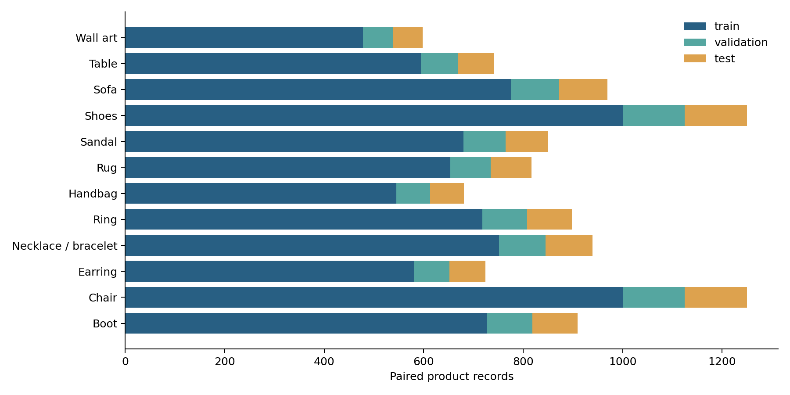
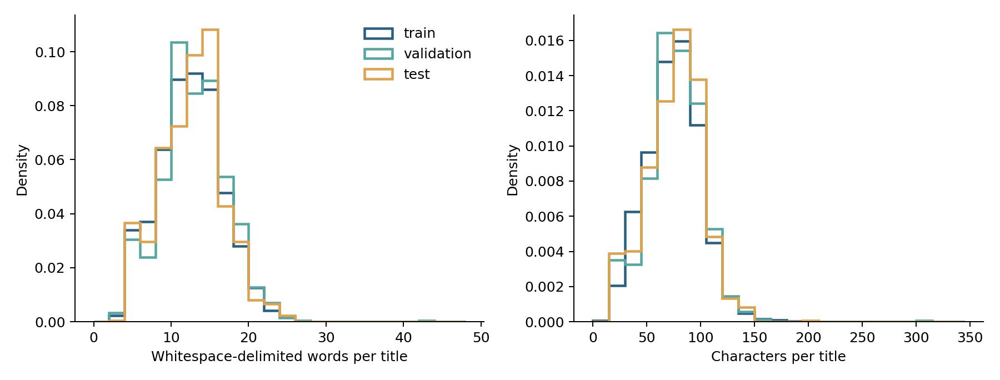
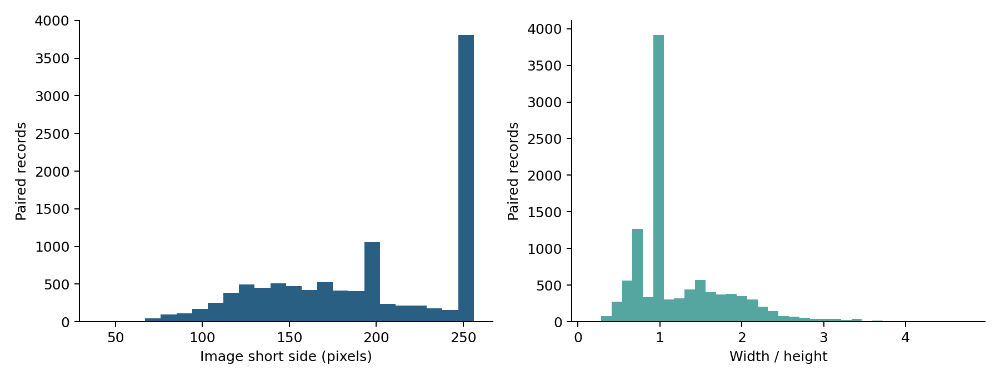
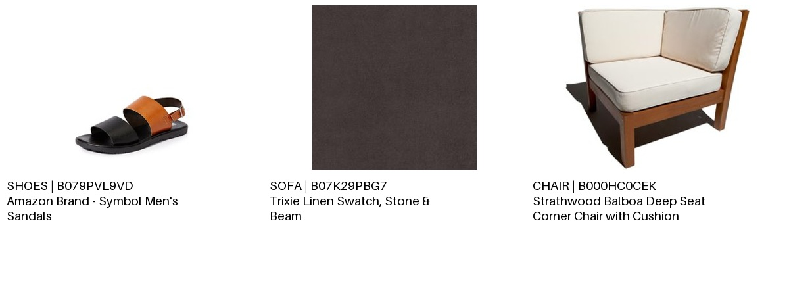

Assignment and milestones
- Group
- NNs
- Instructor
- Lê Thành Sách
- Members
- Nguyễn Nhật Nam (2352778), Hồ Hồng Phúc Nguyên (2352824), Phan Quốc Đại Sơn (2353053)
- Task
- Single-label catalog product-type classification
- Modalities
- A = main product image, B = native English-locale title
- M1 Proposal
- 18 Nov 2026 · 15% of A3 · Prepared, decision pending
- M2 Draft
- 25 Nov 2026 · 25% of A3 · Submitted: unimodal A, unimodal B and simple fusion with quantitative results
- M3 Final
- 02 Dec 2026 · 60% of A3 · Planned
M1 package
- Dataset Proposal PDF
- Machine-readable EDA and manifest hashes
- Recorded review of 36 image/title pairs
- Source repository · A3 data scripts (
scripts/a3_*.py) · proposal source · approval record
M2 package
- Image-only A: code · results
- Title-only B: encoder · training script · results · token-length check
- Simple fusion: model · training script · results
- Shared data loader:
src/a3/data.py
Final-report, slide, presentation and checkpoint deliverables are scheduled for M3.
Dataset proposal and approval
Awaiting instructor approval. Prepared 18 November 2026. Submission timestamp and the instructor's decision will be recorded in reports/a3/a3_approval.md.
| Proposal field | Content |
|---|---|
| Dataset and license | Amazon Berkeley Objects, official metadata/image index snapshot downloaded 18 Nov 2026, CC BY 4.0, credited to Amazon.com. |
| Task and target | Predict one of 12 native catalog product-type tags from a paired main image and title. |
| Sample counts | 147,702 raw records, 19,230 cleaned pairs in the chosen class scope, 10,627 experiment pairs, 8,739 distinct selected image IDs. |
| Quality analysis | Source correspondence checked for all 10,627 pairs. All 13,320 downloaded main images decoded. A 36-pair visual review documents broad and overlapping native labels. |
| Split unit | Connected item/image/title/model/perceptual-duplicate groups. Seed 42. Train 8,501, validation 1,063, test 1,063. |
| Metrics and models | Macro-F1 and accuracy. Image-only ResNet-18, title-only DistilBERT, concatenation fusion, learned-gate fusion. |
| Subset and resources | Cap 1,250 pairs per class. Planned 16 GB CUDA GPU. Budget 32 GPU hours using explicit throughput assumptions, to be replaced by an approved-run pilot. |
Problem statement
Product titles can be short or noisy, while photographs can contain similar products or several objects. The prediction unit is a native product item ID, with one main photograph, one title and one catalog product-type tag.
The research question is whether image information adds value beyond a title-only model, and whether learned gating improves fusion when modalities supply unequal or conflicting evidence.
Dataset and multimodal EDA
Official ABO source. Data and images are credited to Amazon.com under CC BY 4.0. File hashes pin the local snapshot. Modalities are paired through each source item's original main-image ID.
The selected experiment contains 10,627 complete image/title pairs. Title length has median 12 words, 95th percentile 19, and range 2–45. Image short side has median 197 pixels and range 40–256. Width/height ratio ranges from 0.156 to 4.741.
| Population | Records/pairs | Missing any title | Missing main-image ID/file | No English title |
|---|---|---|---|---|
| All raw records | 147,702 | 0 | 575 (0.3893%) | 24,968 (16.9043%) |
| Raw selected classes | 27,316 | 0 | 23 (0.0842%) | 6,924 (25.3478%) |
| Selected experiment | 10,627 | 0 | 0 | 0 |
English-title absence is a language-eligibility condition. Raw missingness uses independent counts, while cleaning exclusions follow sequential filters.

| Native product type | Selected pairs |
|---|---|
| BOOT | 909 |
| CHAIR | 1,250 |
| FINEEARRING | 724 |
| FINENECKLACEBRACELETANKLET | 939 |
| FINERING | 898 |
| HANDBAG | 681 |
| RUG | 817 |
| SANDAL | 850 |
| SHOES | 1,250 |
| SOFA | 969 |
| TABLE | 742 |
| WALL_ART | 598 |


Pair quality and native labels
All 10,627 selected source mappings matched. A fixed-seed visual review covered two random pairs per class and 12 additional label-flag candidates. All 36 depicted compatible product families, with nine native SHOES labels on sandals and one SOFA label on a fabric swatch. Fine attributes were not exhaustively verified. This mixed sample provides qualitative observations.
Across the selected subset, title checks flag 45 SHOES titles mentioning boots, 97 mentioning sandals and 76 CHAIR/SOFA titles mentioning accessory terms. These 218 candidates can include full furniture products with cushions. Native labels are retained for the proposed catalog-tag task.

Cleaning and split validity
Cleaning removes exact image/title/label duplicates and identical images with conflicting labels. Native source locations and exclusion reasons are saved. Shared item/image identity, pixels, normalized titles, brand/model identifiers and pHash distance at most four form connected groups before subset selection.
The split contains 5,286 selected groups, with zero cross-split overlap in checked IDs, pixels and normalized titles. The largest group has 1,211 pairs (11.40%), reflecting conservative footwear grouping. Every model uses the same train/validation/test manifests.
Planned methodology
native paired records → cleaning and grouped split → per-modality preprocessing
→ ResNet-18 image encoder and DistilBERT title encoder → classifier or fusion
→ cross-entropy loss → optimization → validation-selected checkpoint → evaluation| Required model | Planned architecture | Status |
|---|---|---|
| Image-only A | ImageNet-pretrained ResNet-18, pooled 512-vector, 12-class head. | M2 draft run with ResNet-50 (2048-vector) |
| Title-only B | Pretrained distilbert-base-uncased, masked mean-pooled 768-vector, 12-class head. | M2 draft run |
| Simple fusion | Concatenate image/title vectors, then a 256-unit MLP and class head. | M2 draft run (ResNet-50 + DistilBERT, 2816→256→12) |
| Improved fusion | Project both vectors to 256 units, learn a sigmoid gate, blend and classify. | Planned for M3 |
Images preserve aspect ratio and use white padding to 224×224 with ImageNet normalization. Titles retain natural product names and use WordPiece IDs plus an attention mask with planned length 96. The truncation rate will be measured with the tokenizer.
Each model minimizes cross-entropy for its own output. The controlled gate ablation uses a fixed 0.5 blend with the same projections and training policy. Additional inference ablations mask either representation in the improved model.
Planned experimental setup
Batch size 32, maximum 20 epochs, two frozen-encoder warm-up epochs followed by fine-tuning of the final ResNet stage and final two DistilBERT layers. AdamW uses head LR 0.001, encoder LR 0.00002, weight decay 0.01, cosine scheduling, fusion dropout 0.2 and gradient clipping 1.0.
Best validation macro-F1 selects checkpoints, with early-stopping patience four. Seeds 42, 43 and 44 use the same fixed dataset split. Accuracy, macro-F1, per-class results, parameters and runtime will be reported.
The resource plan assumes one CUDA GPU with at least 16 GB memory. The 32-hour budget uses assumed throughputs of 35 image-only, 60 title-only and 25 fusion training pairs/second. These are planning assumptions to be replaced by pilot measurements after approval.
Milestone evidence and results
M1 evidence consists of the completed source/quality audit, EDA plots, fixed manifests and proposal.
M2 draft results (seed 42)
All three models use the same fixed train/validation/test manifests (8,501 / 1,063 / 1,063 pairs). The checkpoint with the best validation macro-F1 is kept for each model.
| Model | Encoder(s) | Best epoch | Val accuracy | Val macro-F1 | Test accuracy | Test macro-F1 | Parameters | Training time |
|---|---|---|---|---|---|---|---|---|
| Image-only A | ResNet-50, ImageNet | 11 / 15 | 0.9605 | 0.9652 | 0.8937 | 0.9061 | 23.5 M | 749 s |
| Title-only B | DistilBERT, mean pooling | 9 / 13 | 0.9652 | 0.9686 | 0.9247 | 0.9357 | 66.4 M | 126 s |
| Simple fusion | ResNet-50 + DistilBERT, concatenation | 8 / 12 | 0.9812 | 0.9841 | 0.9398 | 0.9474 | 90.6 M | 1,047 s |
Simple fusion is the strongest model on both validation and test in this single-seed draft. It beats the better unimodal model (title-only) by 1.6 macro-F1 points on validation and 1.2 points on test.
Draft limitations, to be resolved for M3:
- Each model has one seed. Seeds 43 and 44 are still to run, so the gaps above have no variability estimate yet.
- Training policies are not yet aligned. The image-only run fine-tunes all of ResNet-50 for 15 epochs at learning rate 1e-4, without frozen warm-up or early stopping. The title-only and fusion runs use the proposal policy: two frozen epochs, partial fine-tuning, and early stopping with patience 4. The proposal's ResNet-18 image encoder was replaced by ResNet-50 in this draft.
- Runs used different hardware (CUDA laptop GPU and Apple MPS), so training times are not directly comparable.
- All three models lose 3–6 points between validation and test. This gap will be examined in the M3 error analysis.
Improved (gated) fusion, ablations and error analysis follow in M3.
Discussion plan
Comparisons will report effect sizes and seed variability under the fixed protocol. Supporting cases, conflicting evidence and fusion failures will connect numerical results to the data and architecture.
Error analysis and ablation plan
The recorded data review identifies overlapping product tags, broad accessory tags, translated/romanized titles and repeated variants as categories to investigate. Learned versus fixed gating and modality-masking ablations will examine fusion contribution and dependence on each input.
Scope and limitations
The proposal uses a custom 12-class subset and the original catalog tags. Titles may be strong label cues. English locale tags can contain noisy translation fragments. Small images limit fine-detail recognition and conservative duplicate groups can combine distinct items. The proposal requests instructor approval of this scope and target definition.
Reproducibility
python scripts/a3_download_abo.py
python scripts/a3_prepare_abo.py --download-images --workers 16
python scripts/a3_eda.pySix preparation CSV files were byte-identical after an offline rerun. The EDA summary records manifest hashes and library versions. Image receipts record source URLs, bytes, ETags and SHA-256 values. The approval record is maintained under reports/a3/a3_approval.md.
AI usage disclosure (Assignment 3)
AI_USAGE.md.| Tool / model | Used by | Stage | Purpose | Affected files / sections | Verification | Responsible member |
|---|---|---|---|---|---|---|
| Claude (Claude Code, Opus 5) | Hồ Hồng Phúc Nguyên | 09 Sep 2026 — course website setup | Generate this assignment page template from the course handbook (section structure, cross-modal validity checklist, method-content table, rubric) | docs/assignments/assignment-3.html |
Every section checked against the handbook requirements; the page was opened and its links verified. No experimental content was generated. | Hồ Hồng Phúc Nguyên |
| OpenAI Codex, model not recorded | Nguyễn Nhật Nam | 18 Nov 2026 · A3 M1 | ABO acquisition, cleaning/EDA, visual review, experiment planning and proposal drafting | scripts/a3_*.py, reports/a3/, results/a3/, website and AI_USAGE.md | Real source-file runs, all selected source mappings, 36 visual pairs, split checks, offline rerun and PDF layout review. Member review pending. | Nguyễn Nhật Nam |
| Claude (Claude Code, Opus 5.5) | Hồ Hồng Phúc Nguyên | 18 Nov 2026 · A3 M1 | Merge the A3 M1 pages into the main site; update the landing-page status, deliverable links and disclosures | docs/index.html, docs/assignments/assignment-3.html | Merge conflict resolved by hand; page links and asset paths checked. No experimental content was generated. | Hồ Hồng Phúc Nguyên |
Grading rubric (within Assignment 3)
| Component | What is assessed | Weight |
|---|---|---|
| Problem & data understanding | Pair validity, EDA, leakage-aware splits | 15% |
| Data & training pipeline | Multimodal loading, alignment, training loop | 15% |
| Methods & implementation | Unimodal baselines, fusion, improved multimodal model | 25% |
| Experimental design & results | Comparisons, metrics, compute cost | 20% |
| Analysis & error analysis | Support/conflict cases, ablation, limitations | 15% |
| Reproducibility, report & presentation | Repo, pages, video, disclosure, writing | 10% |